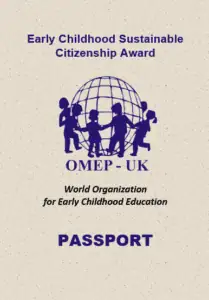
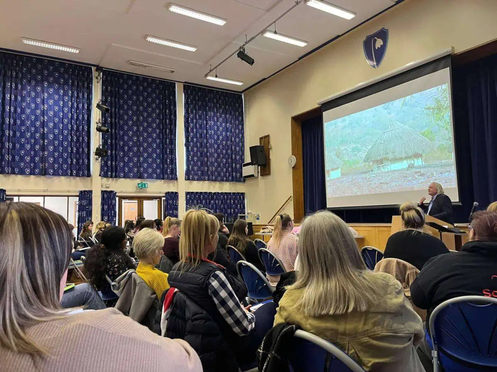
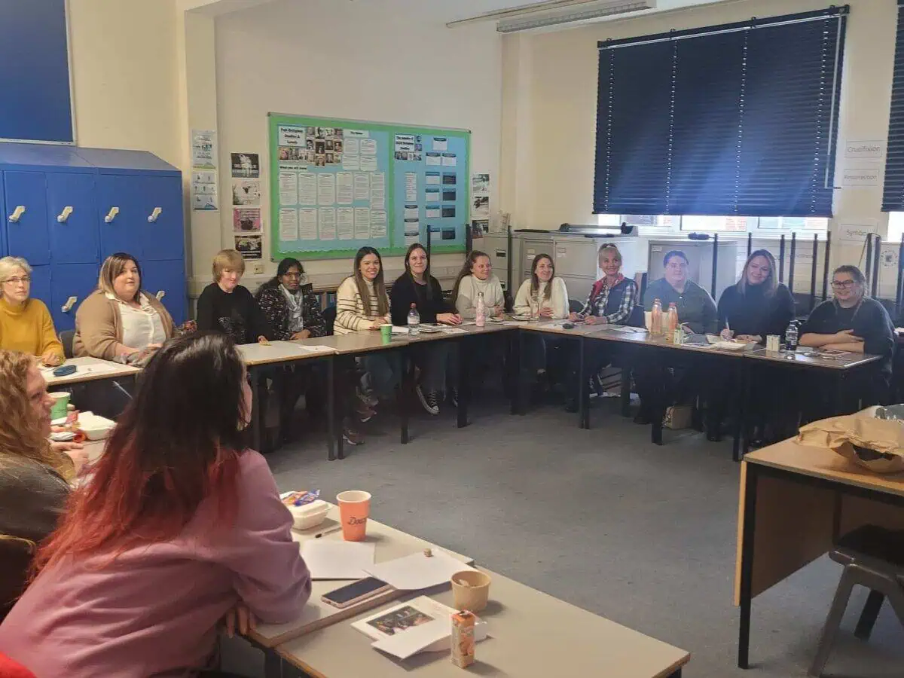
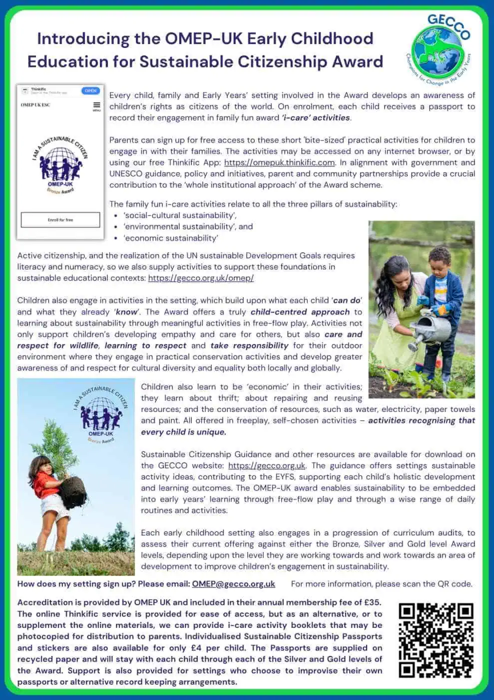

Sustainable Citizenship
Since the 2005 United Nations World Summit, it has become commonplace to refer to the interdependent and mutually reinforcing pillars of sustainable development as social, cultural, economic and environmental sustainability.
The challenge for early childhood educators is to develop appropriate educational systems, curriculum and pedagogic practices that provide an appropriate early introduction to these areas of concern.
A summary flyer for the OMEP UK Early Childhood Education for Sustainable Citizenship Award is available for download HERE.
This work was published in 2016 and further details are available HERE.
The criteria applied audit and accreditation at Bronze level are summarised HERE.

Each child is able to collect award stickers for entry into their passport, showing ESC achievements at Bronze, Silver and Gold level.
Early childhood education is child centred and personalised. Popular early learning models can support preschools in implementing meaningful, ecological and practical learning.
A Path made in the Walking provides a useful introduction to such practice in the context of Forest School Education.
GECCO welcomes collaboration with training providers and academics. Contact us at gecco@gecco.org.uk.
The importance of education in supporting the transition to a more sustainable society has been emphasised by the United Nations Sustainable Development Goals.
The Greening Education Partnership and Greening Curriculum Guidance support whole-school sustainability approaches.
For further information please contact: OMEP@gecco.org.uk
OMEP is an international non-governmental and non-profit organisation with Consultative Status at the United Nations and UNESCO.
Tops Day Nurseries and Aspire Training team hosted the OMEP Conference on 29 January 2023.

The regular Tops e-providers were not able to support the move at that point, but Thinkific and GoAudit were used to pilot OMEP awards.

